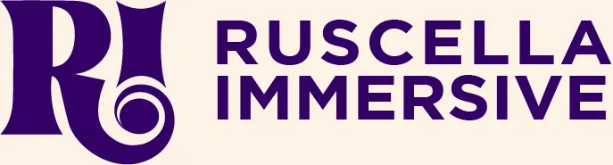
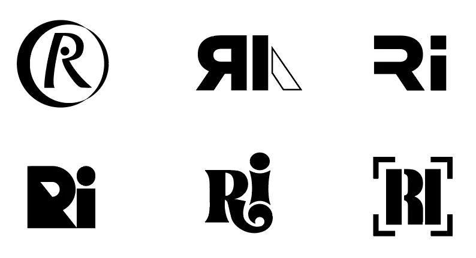
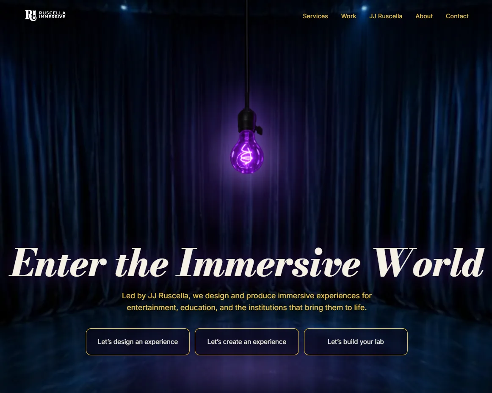
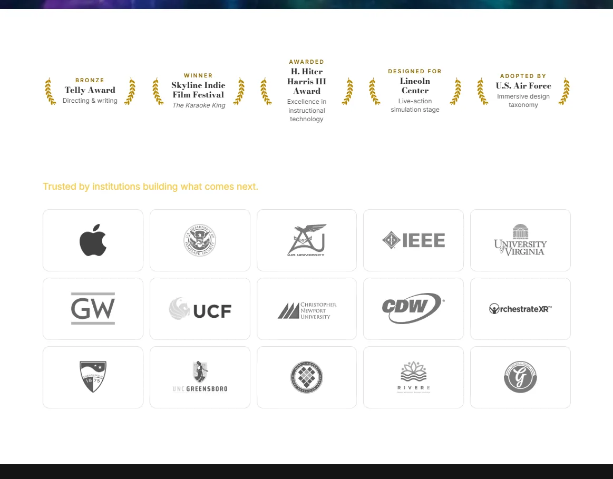
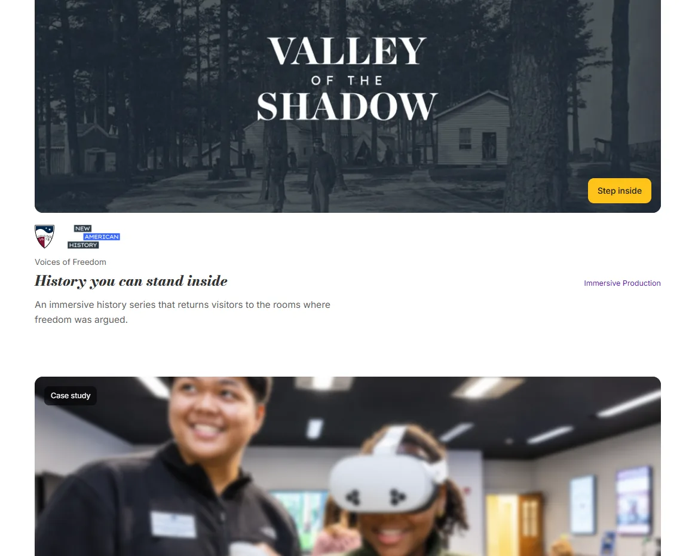
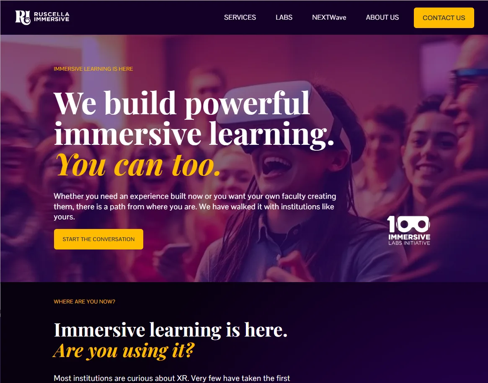
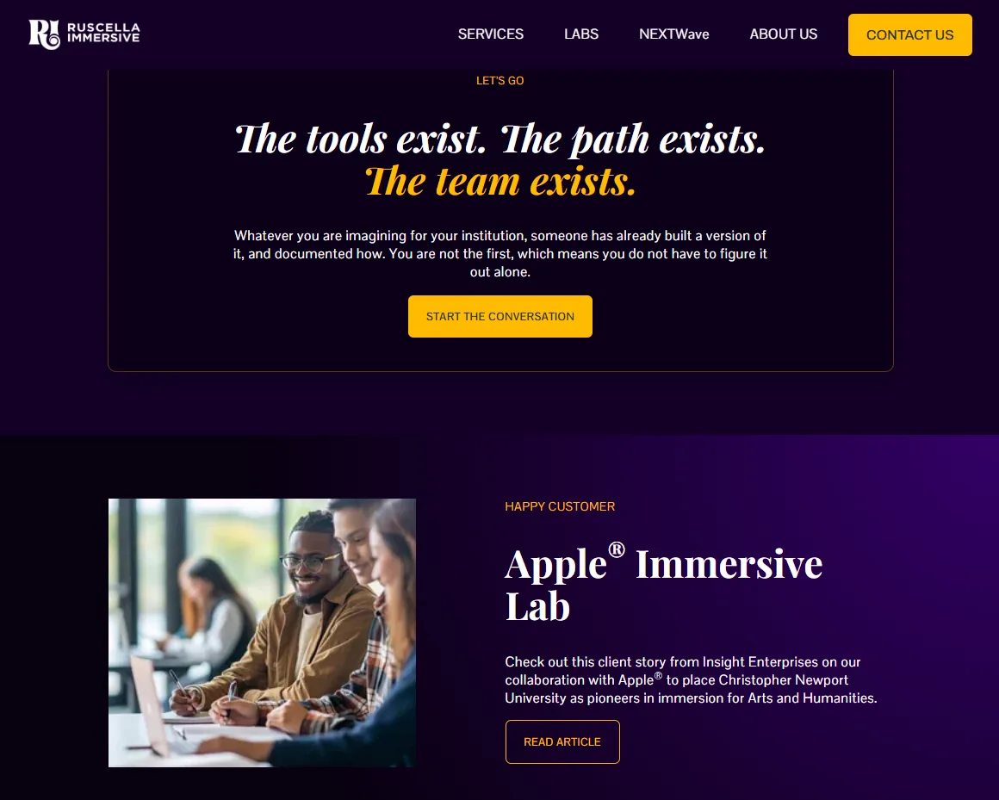
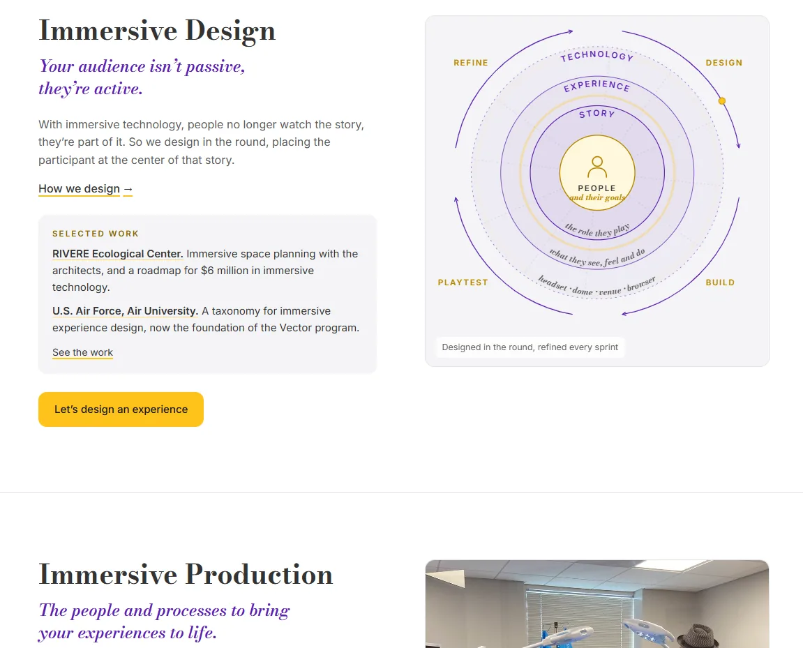
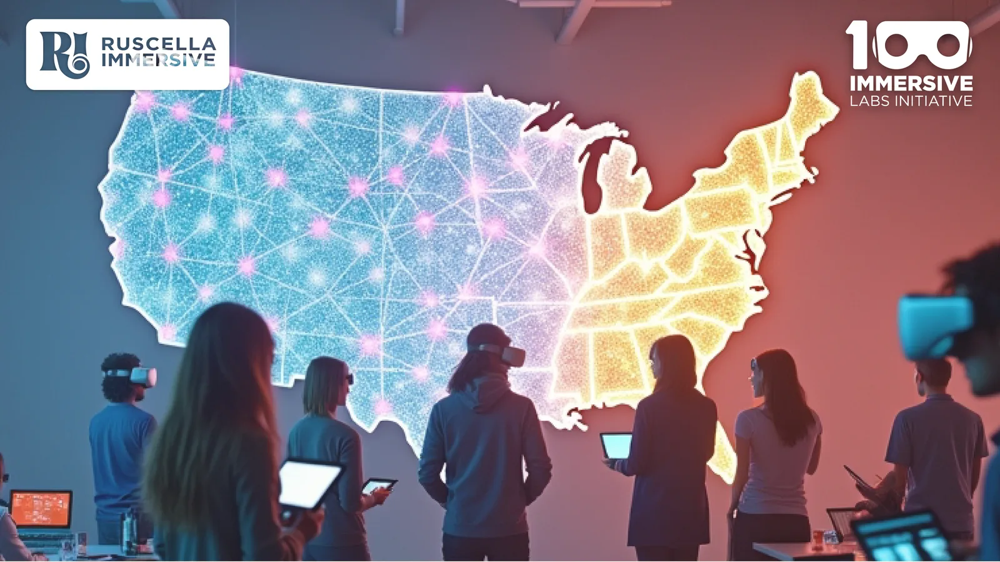

Ruscella Immersive
A brand that moved from labs to experiences without losing its voice.
+4experiences requested after the first
[#][schools in the summer workshop]

- Client
- Ruscella Immersive
- Company
- Ruscella Immersive (co-founder) · 2024–present
- Role
- Chief Creative Officer and Co-Founder
- Team
- [Team size]
- Discipline
- Brand strategy, identity, website, copy
Challenge
Most buyers had never used immersive technology, and many found it intimidating. The brand had to feel creative without feeling like a toy, and credible to deans, provosts and agencies.
Solution
- Positioned Ri as the guide and the client as the hero: roughly 80% sage, 20% creator.
- Drew the R for a wordmark built on JJ Ruscella’s name: a playful leg that invites people in, and a curl that reads as a portal.
- When buyers moved from lab builds to experiences, reordered the offer: “We build immersive experiences and make labs.”
- Carried the brand through two generations of the website: 1.0 as a guide (“Build your own lab. We’ll show you how.”), 2.0 opening on a stage with a ghost light.
My role
- Led brand strategy and brand identity
- Developed the brand position, logo, tagline, voice and brand guidelines
- Designed and developed both generations of the website: structure, visual content, navigation and messaging
Highlights










Results
- One immersive history experience for New American History led to a request for four more.
- The lab goal lives on as a summer workshop for multiple schools.
- Invited to direct a mixed reality Christmas experience in Orlando that blends live theatre with immersive technology.